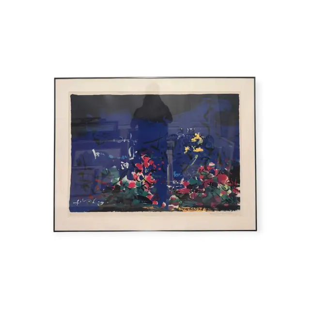
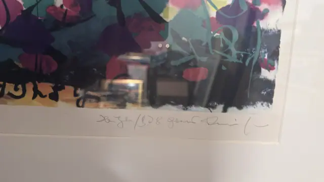
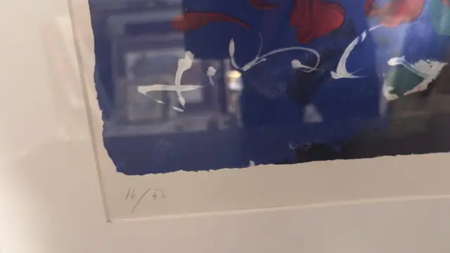
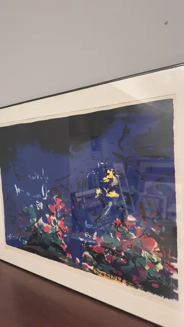

Paintings & Prints
Night Garden in Blue, Signed and Numbered 16/50, Numbered Edition, Framed
· late 20th century
Price Upon Request




About the Item
A near-black bush or clipped topiary rises at the centre of a wall of ultramarine and violet, its silhouette dissolving into loose calligraphic scribbles of black and pale blue that suggest railings, benches and a lamp standard. Along the bottom third the picture explodes into broad flat petals of teal, crimson, cream and acid yellow - a bank of flowers caught by artificial light. The handling is fast and gestural throughout, printed with the flat overlapping colour of a hand-pulled screenprint. The deckle-edged sheet is float-mounted on a white mat in a thin black metal frame. Medium: serigraph (screenprint) on deckle-edged paper. Signed lower right margin, in pencil, after a handwritten title line. Edition: 16/50. Inscribed on the reverse or mount: 16/50 (pencil, lower left margin). Condition: Sheet appears clean with no foxing or waviness visible through the glass; deckle edges intact. Heavy window and room reflections across the glazing.
Details
- Creation Year:
- late 20th century
- Dimensions:
- Height: 30.8 in (78.23 cm)
Width: 40.2 in (102.11 cm)
outside of frame - Medium:
- serigraph (screenprint) on deckle-edged paper
- Edition:
- 16/50
- Period:
- 20Th
- Condition:
- Offered in the condition shown in the photographs.
- Reference Number:
- VO-120
- Documentation:
- no certificate photographed
- Gallery Location:
- 16/50 (pencil, lower left margin)